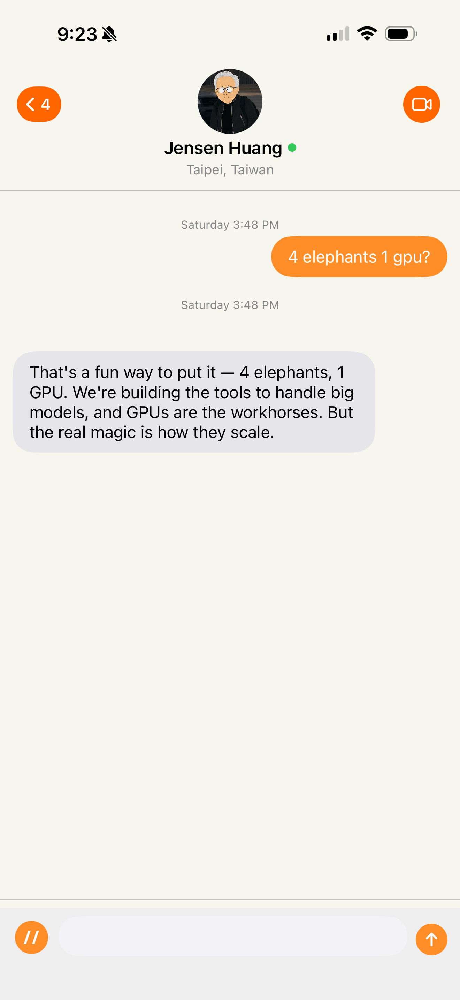
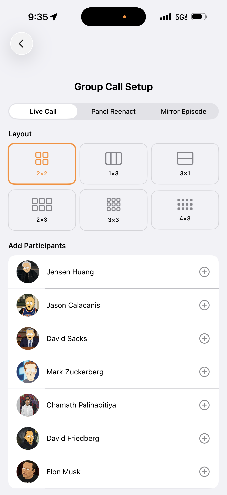
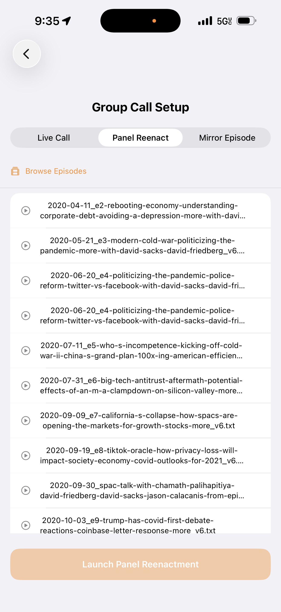
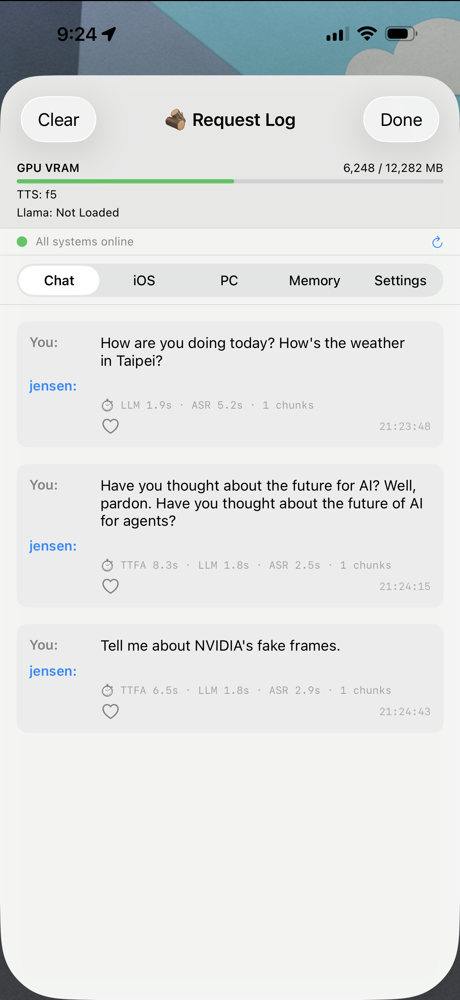
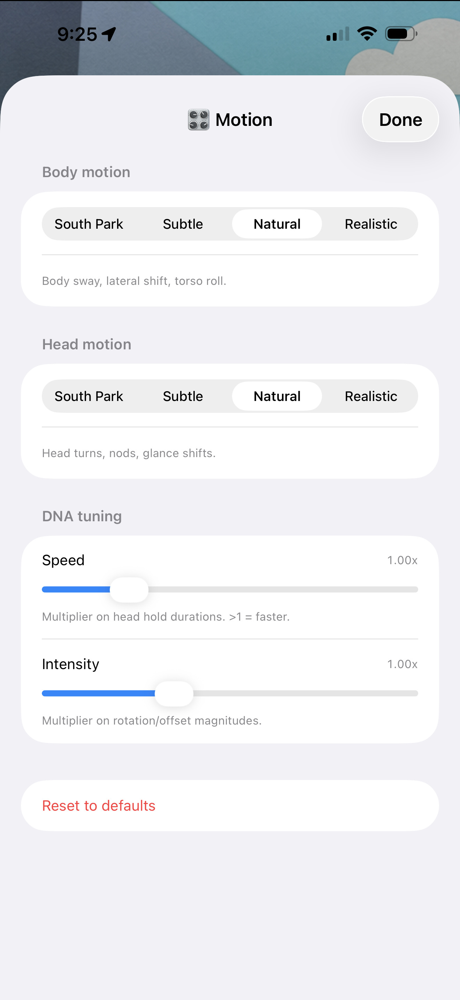
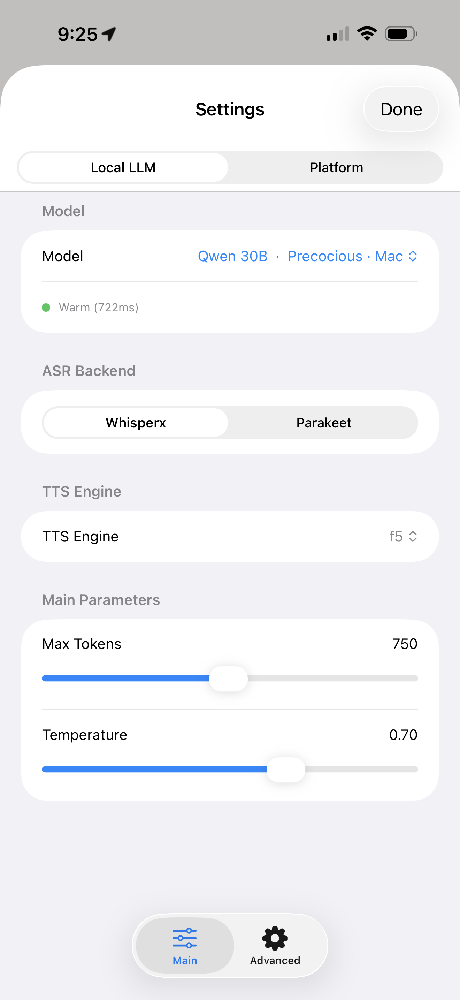
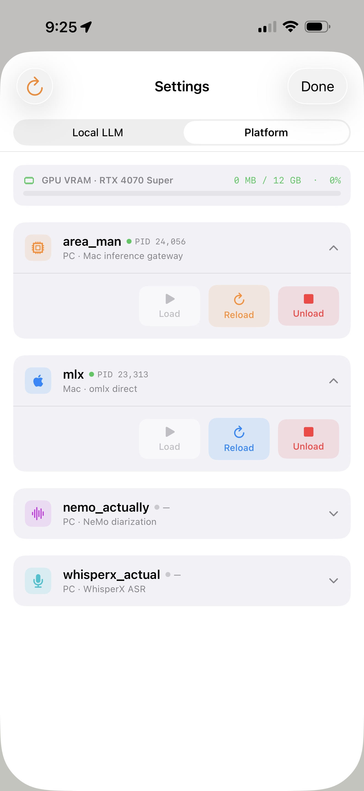

iOS Client
App UI
A SwiftUI iOS app with a FaceTime-style interface. The phone is not the model host — it is the control surface for a distributed local AI system. Audio capture, streamed TTS playback, transcript display, persona animation, runtime controls, and observability live on-device; inference, ASR, diarization, and TTS generation run across Mac and PC infrastructure.
The messages list is the home screen. Each persona has a satirical avatar and a live preview of their most recent response. The original Besties — Sacks, Chamath, Friedberg, and JCal — are joined by Elon Musk, Jensen Huang, Mark Zuckerberg, Alex Karp, and Marc Andreessen.

FaceTime-style chat with any persona. Runtime telemetry is surfaced inline, including token counts, generation speed, prompt size, model selection, and response timing. Conversations support streamed text and streamed speech playback.

A second product surface for multi-persona interactions. Three modes: Live Call for real-time group conversations, Panel Reenactment for transcript-driven replay, and Mirror Episode for synthetic roundtable discussions. Layouts support up to twelve participants.


Historical episodes can be loaded directly from the transcript corpus and replayed through the current persona system. This provides a practical evaluation surface for persona fidelity, transcript quality, speaker attribution, and conversational drift.

A live observability console. Every request records ASR latency, LLM generation time, TTFA, chunk counts, playback status, and service health. The interface exposes the runtime as an inspectable system rather than a black-box chatbot.

Motion DNA parameters can be tuned directly from the phone. Body motion, head motion, speed, and intensity are adjustable across South Park, Subtle, Natural, and Realistic rendering modes.

Full runtime configurability from the phone. Controls include model selection, ASR backend (WhisperX vs Parakeet), TTS engine, temperature, token limits, sampling parameters, memory controls, and retrieval settings.

The phone can inspect and control the distributed runtime. Mac inference, PC gateway services, WhisperX ASR, NeMo diarization, GPU allocation, process state, reload actions, and health checks are exposed through the client.
